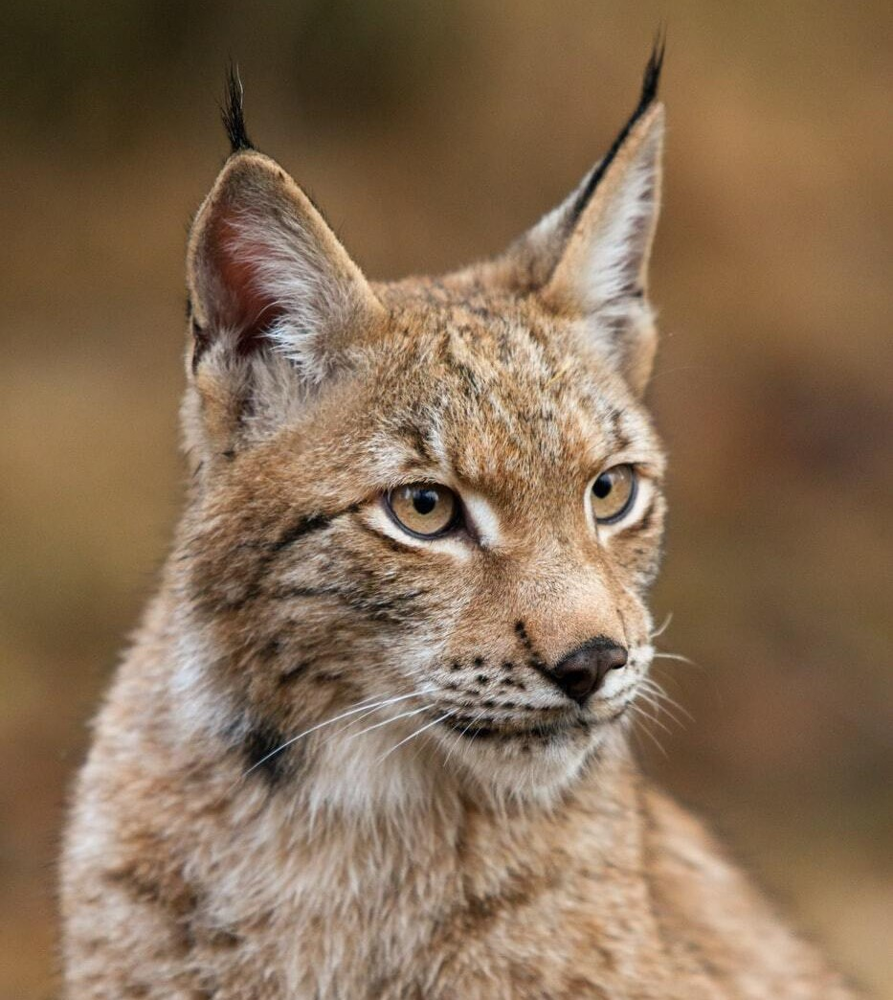

Datos
¿Sabías qué?
Bosques
- Alrededor de 1.600 millones de personas dependen de los bosques para su sustento, incluidos 70 millones de personas indígenas.
- Entre 2010 y 2015, el mundo perdió 3,3 millones de hectáreas de áreas forestales. Las mujeres rurales pobres dependen de los recursos comunes y se ven especialmente afectadas por su agotamiento.
- Entre 2010 y 2015, el mundo perdió 3,3 millones de hectáreas de áreas forestales. Las mujeres rurales pobres dependen de los recursos comunes y se ven especialmente afectadas por su agotamiento.
Biodiversidad
- Más del 80 por ciento de la dieta humana está compuesta por las plantas. Solo tres cultivos de cereales (arroz, maíz y trigo) proporcionan el 60% de la ingesta energética.
- Aproximadamente, el 80 por ciento de las personas que viven en las zonas rurales de los países en desarrollo, dependen de medicamentos tradicionales basados en plantas para la atención básica de la salud.
- Los microorganismos e invertebrados son clave para los servicios de los ecosistemas, pero sus contribuciones aún son poco conocidas y raramente reconocidas.
Biodiversidad
- La caza furtiva y el tráfico ilícitos de vida silvestre continúan frustrando los esfuerzos para su conservación, casi 7.000 especies de animales y plantas fueron denunciadas como parte del comercio ilegal en 120 países.
- De las 8.300 razas de animales conocidas, el 8% está extinto y el 22% está en peligro de extinción.
- De las más de 80,000 especies de árboles, menos del 1 por ciento se han estudiado para su posible uso.
- Los peces proporcionan el 20% de las proteínas animales a unos 3.000 millones de personas. Solo diez especies proporcionan alrededor del 30% de la pesca de captura marina y diez especies proporcionan alrededor del 50% de la producción acuícola.

Desertificación
- 2.600 millones de personas dependen directamente de la agricultura, pero el 52% de la tierra utilizada para la agricultura se ve moderada o severamente afectada por la degradación del suelo.
- La pérdida de tierras cultivables se estima en 30 a 35 veces la tasa histórica Debido a la sequía y la desertificación, se pierden 12 millones de hectáreas cada año (23 hectáreas por minuto). En un año, podrían haberse cultivado 20 millones de toneladas de grano.
- 74 por ciento de los pobres son directamente afectados por la degradación de la tierra a nivel mundial.